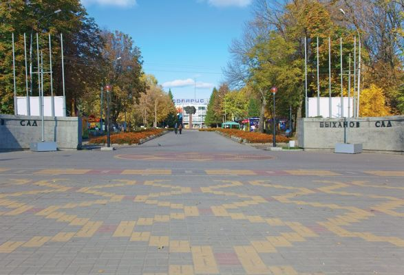

Достопримечательности Липецка


Быханов сад
Быханов сад — парк в Правобережном округе города Липецка. Официальное название — парк «Быханов сад». В самом центре парка находится здание развлекательно-ресторанного комплекса «Быханов», он является уникальным для Липецка и региона клубно-ресторанным пространством, который ежедневно посещают горожане и туристы. Расположен между улицами Гагарина, Балмочных, Тельмана и Евдокиевским кладбищем.
Площадь — 13,8 га.
В составе древесных пород преобладают ель, берёза, каштан. Также здесь растут декоративные кустарники, липы сердцелистные, яблони и груши,скумпия.
История и общие сведения
«Быханов сад» является парком культуры и отдыха, который сформирован в 1954 году на территории питомника Липецкого зеленхоза, который ранее, в свою очередь, был организован на базе питомника плодовых и лесопарковых культур уроженца Липецка и известного липецкого садовода — Василия Васильевича Быханова (1829—1896), брата выдающегося русского ученого предложившего теорию дрейфа материков — Евграфа Васильевича Быханова (1839—1915). Первоначально, в 1954 году, парк получил имя — Комсомольский. В 1967 году в парке открывается памятник учителю и комсомольскому вожаку В. Н. Скороходову. (ск. Ю. Д. Гришко, арх. Н. Р. Полунин). В его честь парк переименован в парк имени В. Н. Скороходова. 30 июня 1993 года парк переименовали в Быха?нов сад. По периметру парка (вдоль улиц Балмочных и Тельмана) сохраняются деревянные частные дома. На востоке Быханов сад ограничивает здание спортивного комплекса «Спартак» (ул. Гагарина, 70а), первая очередь которого, была сдана в 1968 году. Ботаническая ценность парка определяется наличием деревьев — экзотов, таких как ель колючая, клён псевдоплатановый, робиния псевдоакация, области распространения которых находятся на разных континентах. Кроме того, на территории парка живёт ряд видов птиц: горлица кольчатая, поползень обыкновенный, рябинник, свиристель, стриж чёрный.
Изображения:


Быханов сад на карте: